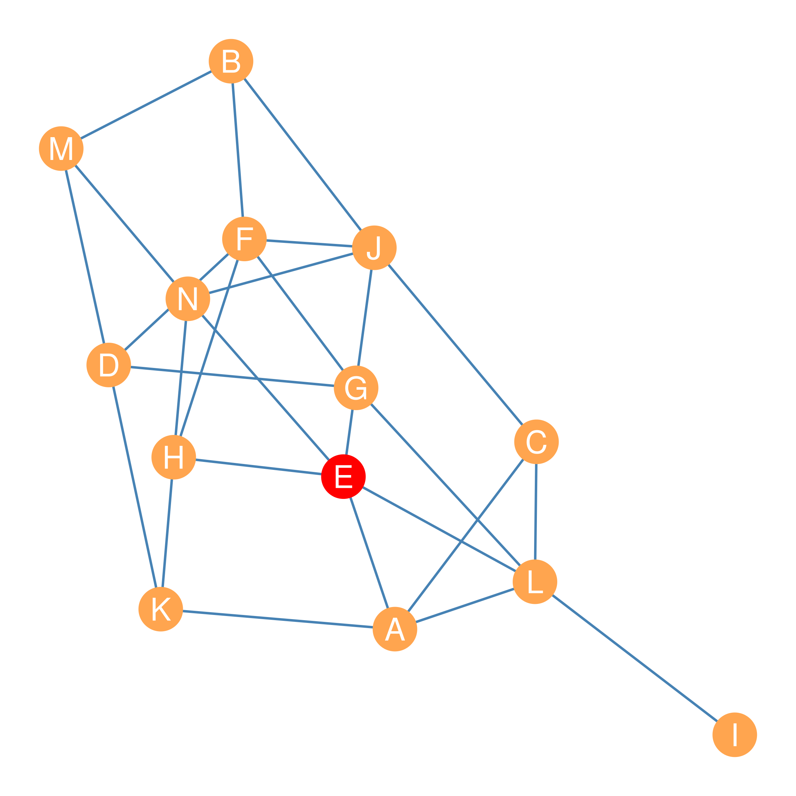

| A | B | C | D | E | F | G | H | I | J | K | L | M | N | |
|---|---|---|---|---|---|---|---|---|---|---|---|---|---|---|
| A | 0 | 3 | 1 | 2 | 1 | 3 | 2 | 2 | 2 | 2 | 1 | 1 | 3 | 2 |
| B | 3 | 0 | 2 | 2 | 2 | 1 | 2 | 2 | 4 | 1 | 3 | 3 | 1 | 2 |
| C | 1 | 2 | 0 | 3 | 2 | 2 | 2 | 3 | 2 | 1 | 2 | 1 | 3 | 2 |
| D | 2 | 2 | 3 | 0 | 3 | 1 | 1 | 2 | 3 | 2 | 1 | 2 | 1 | 2 |
| E | 1 | 2 | 2 | 3 | 0 | 2 | 2 | 1 | 2 | 1 | 2 | 1 | 2 | 1 |
| F | 3 | 1 | 2 | 1 | 2 | 0 | 1 | 1 | 3 | 1 | 2 | 2 | 2 | 2 |
| G | 2 | 2 | 2 | 1 | 2 | 1 | 0 | 2 | 2 | 2 | 2 | 1 | 2 | 3 |
| H | 2 | 2 | 3 | 2 | 1 | 1 | 2 | 0 | 3 | 2 | 1 | 2 | 2 | 1 |
| I | 2 | 4 | 2 | 3 | 2 | 3 | 2 | 3 | 0 | 3 | 3 | 1 | 4 | 3 |
| J | 2 | 1 | 1 | 2 | 1 | 1 | 2 | 2 | 3 | 0 | 3 | 2 | 2 | 1 |
| K | 1 | 3 | 2 | 1 | 2 | 2 | 2 | 1 | 3 | 3 | 0 | 2 | 2 | 2 |
| L | 1 | 3 | 1 | 2 | 1 | 2 | 1 | 2 | 1 | 2 | 2 | 0 | 3 | 2 |
| M | 3 | 1 | 3 | 1 | 2 | 2 | 2 | 2 | 4 | 2 | 2 | 3 | 0 | 1 |
| N | 2 | 2 | 2 | 2 | 1 | 2 | 3 | 1 | 3 | 1 | 2 | 2 | 1 | 0 |
30 Centralities based on the Geodesic Distance
31
31.1 Closeness Centrality
Sometimes it’s not important how many people you directly connected to. Instead, what is important is that you are indirectly connected to a lot of others. As we saw in the lesson on indirect connectivity, the best way to conceptualize it in social networks is through the concept of shortest paths. So if you can reach most other people in the network via shortest paths with only a few hops, then you are better connected than someone who has to use longer paths to reach the same other people.

This insight serves as an inspiration for a measure of centrality based on closeness. The closeness between two nodes is the inverse of the geodesic distance between them (Bavelas 1950). Recall from Chapter 15 that the geodesic distance is given by the length of the shortest path linking two nodes in the graph. The shorter the length of the shortest path separating two nodes in the graph, the closer the two nodes and vice versa.
Remember that for any number \(n\), the mathematical operation of taking the inverse simply means dividing one by that number. So, the inverse of \(n\) is \(\frac{1}{n}\). This means that if \(d_{ij}\) is the geodesic distance between nodes i and j in graph \(G\), then the closeness between two nodes is \(\frac{1}{d_{ij}}\).
The information on the pairwise geodesic distances between every pair of nodes in a given graph is captured in the geodesic distance matrix. For instance, take the graph shown in Figure 31.1. The distance matrix for this graph is shown in Table 31.1.
As shown in Table 31.1, a node like I, which seems to be on the outskirts of the network, also appears to have the largest geodesic distances to other nodes in the graph. Other nodes, like E, G, and L, seem to be “closer” to others, in terms of having to traverse smaller geodesic distances to reach them.
This means we can use the distance table to compute a measure of centrality called closeness centrality for each node. We can do that by adding up the entries corresponding to each row in the distance matrix (\(\sum_j d_{ij}\)), to get a summary of the total pairwise distances separating the node corresponding to row i in the matrix from the other nodes listed in each column j.
Note that because closeness is better than “farness,” we would want the node with highest closeness centrality to be the one with the smallest sum of pairwise distances. This can be calculated using the following equation:
\[ C_i^{CLOS} = \frac{1}{\sum_jd_{ij}} \tag{31.1}\]
In Equation 31.1, the denominator is the sum across each column j, for each row i in Table 31.1, which corresponds to the distance between node i and each of the other nodes in the graph j (skipping the diagonal cell when \(i=j\), because the geodesic distance of node to itself is always zero!).
As noted, we take the mathematical inverse of this quantity, dividing one by the sum of the distances, so that way, the smallest number comes out on top and the bigger number comes out on the bottom (since, as we said, we want to measure closeness not “farness.”)
Let’s see how this works for the graph in Figure 31.1. First, we get the row sums of geodesic distances from Table 31.1. These are shown in the first column of Table 31.2, under the heading “Sum of Distances.” This seems to work; node \(E\) has the smallest number here (\(\sum_j d_{Ej} = 22\)), suggesting it can reach the most nodes via the shortest paths. Node \(I\) has the largest number (\(\sum_j d_{Ij} = 35\)), indicating it is the most isolated from the other nodes.
| Sum of Distances (d) | Inverse (1/d) | Normalized (N-1/d) | |
|---|---|---|---|
| E | 22 | 0.045 | 0.59 |
| A | 25 | 0.040 | 0.52 |
| M | 28 | 0.036 | 0.46 |
| L | 23 | 0.043 | 0.57 |
| B | 28 | 0.036 | 0.46 |
| J | 23 | 0.043 | 0.57 |
| G | 24 | 0.042 | 0.54 |
| N | 24 | 0.042 | 0.54 |
| F | 23 | 0.043 | 0.57 |
| H | 24 | 0.042 | 0.54 |
| D | 25 | 0.040 | 0.52 |
| C | 26 | 0.038 | 0.50 |
| K | 26 | 0.038 | 0.50 |
| I | 35 | 0.029 | 0.37 |
But we want closeness, not farness, so the second column of Table 31.2 shows what happens when we divide one by the number in the second column. Now, node \(E\) has the largest score \(CC^{CLOS}_E = 0.045\), which is what we want.
However, because we are dividing one by a relatively large number, we end up with a bunch of small decimal numbers as centrality scores, and as it happened with degree, this number is sensitive to how big the network is (the larger the network, the more likely there is to be really long short paths). So Freeman (1979) proposes a normalized version of closeness that accounts for network size. It is a variation of Equation 31.1:
\[ C_i^{CLOS} = \frac{N-1}{\sum_jd_{ij}} \tag{31.2}\]
Equation 31.2 is the same as Equation 31.1, except that instead of dividing one by the sum of distances, we divide \(N-1\) by the sum of distances, where \(N\) is the order of the graph (the number of nodes). In this case, \(N=14\).
Normalizing the sum of distances in the second column of Table 31.2, according to Equation 31.2, yields the centrality scores in the fourth column of the table, under the heading “Normalized.” These scores range from 0 to 1, with 1 being the maximum possible closeness centrality for that graph.
The normalized closeness centrality scores listed in the fourth column of Table 31.2 agree with our informal impressions. Node I comes out at the bottom (\(CC_I^{CLOS} = 0.37\)), indicating it has the lowest closeness centrality, given the relatively large geodesic distances separating it from the other nodes in the graph. Node E (marked red in Figure 31.1) comes out on top (\(CC_E^{CLOS} = 0.59\)), given its relative geodesic proximity to other nodes in the graph.
As we will see later, having closeness centrality information for nodes in a graph can be useful. For instance, if Figure 31.1 was a social network, and we wanted to spread an innovation or a new product among the actors in the fastest amount of time, we would want to give it to node E first. Note, however, that if something bad (like a disease) was spreading across the network, then it would also be very bad if actor E got it first!1
31.2 Houston, We Have a Problem
So far, so good. Closeness seems to be a strong measure of node importance, giving us a sense of who can reach most others in a network most efficiently. However, what would happen if we tried to compute closeness centrality for a disconnected graph like the one shown in Figure Figure 18.1 (b)? Well, the shortest path distance matrix for that graph looks like the one in Table 31.3.
| A | B | C | D | E | F | G | H | I | |
|---|---|---|---|---|---|---|---|---|---|
| A | 0 | 1 | 1 | 1 | 1 | Inf | Inf | Inf | Inf |
| B | 1 | 0 | 1 | 1 | 2 | Inf | Inf | Inf | Inf |
| C | 1 | 1 | 0 | 1 | 1 | Inf | Inf | Inf | Inf |
| D | 1 | 1 | 1 | 0 | 1 | Inf | Inf | Inf | Inf |
| E | 1 | 2 | 1 | 1 | 0 | Inf | Inf | Inf | Inf |
| F | Inf | Inf | Inf | Inf | Inf | 0 | 1 | 1 | 1 |
| G | Inf | Inf | Inf | Inf | Inf | 1 | 0 | 1 | 1 |
| H | Inf | Inf | Inf | Inf | Inf | 1 | 1 | 0 | 1 |
| I | Inf | Inf | Inf | Inf | Inf | 1 | 1 | 1 | 0 |
Note that in Table 31.3, pairs of nodes that cannot reach one another in the disconnected graph get a geodesic distance of “Inf” (infinity) in the respective cell of the geodesic distance matrix. This is a problem because, when we compute the row sums of the geodesic distance matrix to calculate centrality according to Equation 31.1, we obtain the “numbers” shown in Table 31.4.
| A | B | C | D | E | F | G | H | I |
|---|---|---|---|---|---|---|---|---|
| Inf | Inf | Inf | Inf | Inf | Inf | Inf | Inf | Inf |
So that’s a bummer since all the “numbers” in Table 31.4 are just infinity. Not to get too philosophical, but the problem is that when you add any number to “infinity,” the answer is, well, infinity.2 This means that closeness centrality is only defined for connected graphs. When it comes to disconnected graphs, we are out of luck.
Thankfully, there is a solution developed by Beauchamp (1965). It is a modification of Equation 31.1, called harmonic closeness centrality. The formula goes as follows:
\[ C_i^{HARM} = \frac{1}{N-1}\sum_j\frac{1}{d_{ij}} \tag{31.3}\]
Now, this might seem like we just rearranged the stuff in Equation 31.2, and indeed that’s what we did! But the rearrangement matters a lot because it changes the order in which we perform the various arithmetic operations (Boldi and Vigna 2014).
So, in English, while Equation 31.2 says “first sum the geodesic distances for each node (to get the denominator), and then divide \(N-1\) by this sum,” Equation 31.3 says “first divide one by the geodesic distance, and then sum the result of all these divisions, and then multiply this sum by one over \(N-1\).
Once again, the philosophy of mathematical infinity kicks in here, since the main difference is that one divided by infinity is actually a real number: zero.3
So let’s check by taking every entry in Table 31.3 and dividing one by the number in each cell (except for the diagonals, which we don’t care about). The results are shown in Table 31.5.
| A | B | C | D | E | F | G | H | I | |
|---|---|---|---|---|---|---|---|---|---|
| A | 0 | 1.0 | 1 | 1 | 1.0 | 0 | 0 | 0 | 0 |
| B | 1 | 0.0 | 1 | 1 | 0.5 | 0 | 0 | 0 | 0 |
| C | 1 | 1.0 | 0 | 1 | 1.0 | 0 | 0 | 0 | 0 |
| D | 1 | 1.0 | 1 | 0 | 1.0 | 0 | 0 | 0 | 0 |
| E | 1 | 0.5 | 1 | 1 | 0.0 | 0 | 0 | 0 | 0 |
| F | 0 | 0.0 | 0 | 0 | 0.0 | 0 | 1 | 1 | 1 |
| G | 0 | 0.0 | 0 | 0 | 0.0 | 1 | 0 | 1 | 1 |
| H | 0 | 0.0 | 0 | 0 | 0.0 | 1 | 1 | 0 | 1 |
| I | 0 | 0.0 | 0 | 0 | 0.0 | 1 | 1 | 1 | 0 |
Beautiful! Now, instead of weird “Inf”s, we have zeroes, which is great because we can add stuff to zero and get a real number back. We can then apply Equation 31.3 to the numbers in Table 31.5 (e.g., computing the sum of each row and then multiplying that by \(\frac{1}{N-1}\)) to get the harmonic closeness centrality for each node in Figure 18.1 (b). These are shown in Table 31.6.
| A | B | C | D | E | F | G | H | I |
|---|---|---|---|---|---|---|---|---|
| 0.5 | 0.44 | 0.5 | 0.5 | 0.44 | 0.38 | 0.38 | 0.38 | 0.38 |
Great! Now we have a measure of closeness centrality we can apply to all kinds of graphs, whether they are connected or disconnected.
References
Bavelas, Alex. 1950. “Communication Patterns in Task-Oriented Groups.” The Journal of the Acoustical Society of America 22 (6): 725–30.
Beauchamp, Murray A. 1965. “An Improved Index of Centrality.” Behavioral Science 10 (2): 161–63.
Boldi, Paolo, and Sebastiano Vigna. 2014. “Axioms for Centrality.” Internet Mathematics 10 (3-4): 222–62.
Freeman, Linton C. 1979. “Centrality in Social Networks Conceptual Clarification.” Social Networks 1 (3): 215–39.
For more details, see https://byjus.com/maths/infinity/↩︎
Once again, see https://byjus.com/maths/infinity/↩︎